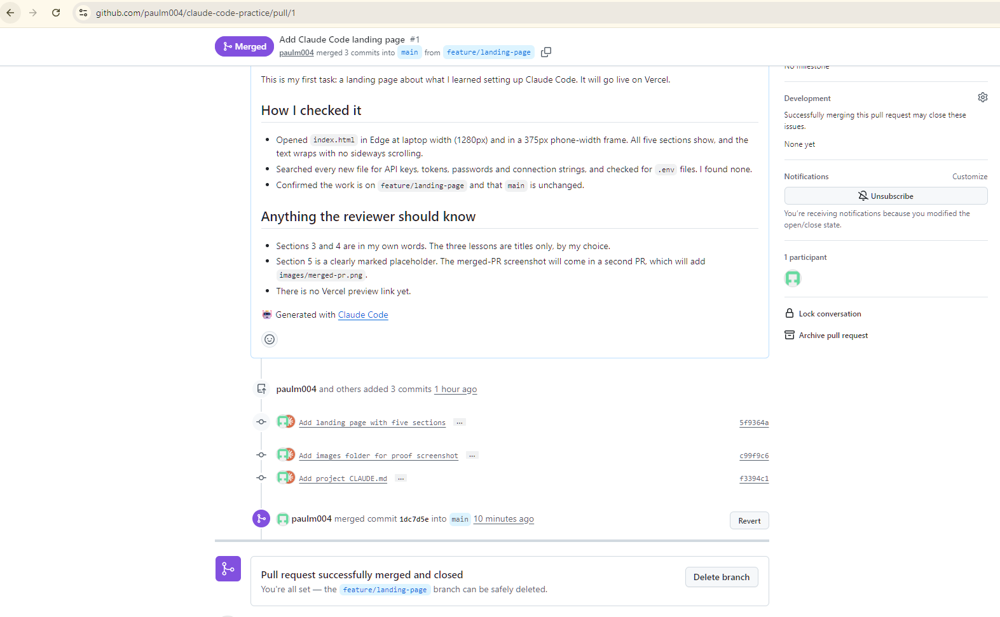

1.Who I am
I'm Paul, a Developer on the AI team at Opt Digital.
2.What I set up
- VS Code: the code editor where I open and edit project files.
- Claude Code: an AI coding assistant that works inside the project with me.
- Git: tracks every change to the files, so work can be saved and undone.
- GitHub: stores the repo online and is where pull requests are reviewed.
- Vercel: publishes this page to the web from the
mainbranch.
3.Three things I learned
- WAT Frameworks
- MCP Architecture
- Skills vs Project/MCP
4.How we work
Make your own copy and then you can build on that copy for checking, running and to prove it works. Then you can commit by saving a snapshot on what changes you've update by pushing your snapshot to the GitHub and wait for Will to review those changes if there's no additional fixes he can apply the changes to the real version by pull request. Then it's live.
5.Proof

main on GitHub.